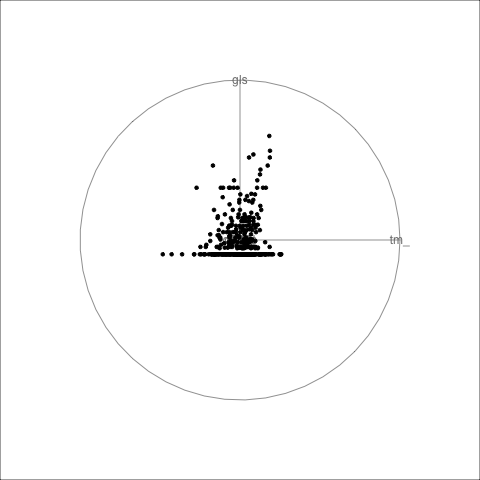
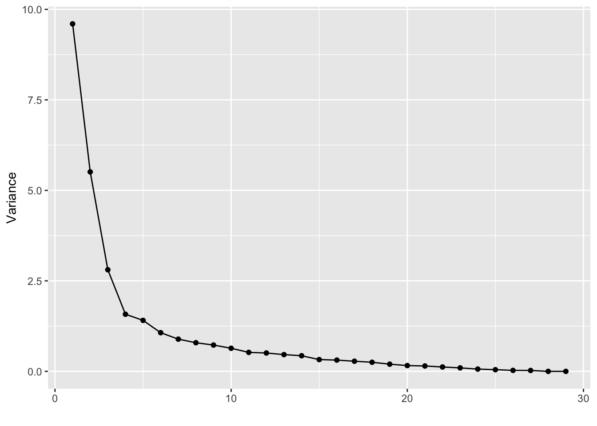

library(dplyr)
library(ggplot2)
library(tourr)
library(mulgar)
data(aflw)
scale2 <- function(x, na.rm = FALSE) (x - mean(x, na.rm = na.rm)) / sd(x, na.rm)
aflw_std <- aflw %>%
ungroup() %>%
mutate_if(is.numeric, scale2, na.rm=TRUE)3 Dimension reduction
This chapter will focus on methods for reducing dimension, and how the tour can be used to assist with the common methods such as principal component analysis (PCA), multidimensional scaling (MDS), t-stochastic neighbour embedding (t-SNE), and factor analysis.
3.1 Principal component analysis (PCA)
This is a statistical technique used to reduce the dimensionality of a large dataset while retaining as much information as possible. PCA identifies the underlying structure of the data by finding a new set of variables, known as principal components (PCs), that are linear combinations of the original variables. The PCs can be used as a new set of variables to represent the data in a lower-dimensional space.
PCA is conducted by finding the directions where the projected data has the highest variance, that is, are most spread. Because the goal is to find a smaller number of variables that contain the similar information, the amount of variance explained by the selected PCs is examined.
PCA summarises linear relationships, and the dimension reduction is achieved by using combinations of variables that are highly correlated. However, high correlation can also occur when there are outliers, or clustering. PCA is commonly used to detect these patterns also. PCA also is not very effective when the distribution of the variables is highly skewed, so it can be helpful to transform variables before computing the PCA.
We would start by examining the data using a grand tour. The goal is to check whether there might be potential issues for PCA, such as skewness, outliers or clustering, or even non-linear dependencies.
We’ll use the AFLW data as the example. This data has player statistics for all the matches in the 2021 season. We would be interested to know which variables contain similar information, and thus might be combined into single variables. We would expect that 30 statistics possibly group into a few small sets, such as offensive and defensive skills. We might also expect that some of the statistics are skewed, most players have low values and just a handful of players are stellar. It is also possible that there are some extreme values. These are interesting features, but they will distract from the main purpose of grouping the statistics. Thus the tour is used to check for potential problems with the data prior to conducting PCA.
To look at all of the 30 player statistics in a grand tour use the animate_xy() function as follows:
animate_xy(aflw_std[,7:35], half_range=0.9)Code
render_gif(aflw_std[,7:35],
grand_tour(),
display_xy(half_range=0.9),
gif_file="gifs/aflw_gt.gif",
frames=500,
loop=FALSE)The gif here is the saved version of the grand tour, made using the render_gif() function.

The data is surprisingly good! There is a small amount of skewness, and there are no major outliers. Skewness indicates that most players have reasonably similar skills (bunching of points), except for some key players (moderate outliers). The skewness could be reduced by applying a log or square root transformation to some variables prior to running the PCA. However, we elect not to do this because there are no major issues that would affect PCA. The moderate outliers are players that are interesting and we’d like to be able to explore these more with the analysis.
Below we have the conventional summary of the PCA, a scree plot showing the reduction in variance to be explained when each additional PC is considered. It is also conventional to look at a table summarising the proportions of variance explained by PCs, but with 30 variables it is easier to make some decision on the number of PCs needed based on the scree plot.
Code
aflw_pca <- prcomp(aflw_std[,7:35],
scale = FALSE,
retx=TRUE)
ggscree(aflw_pca)
From the scree plot, we see a sharp drop from one to two, two to three and then smaller drops. After four PCs the variance drops again at six PCs and then gradually decays. We will choose four PCs to examine more closely. This explains 67.2% of the variance.
Code
library(gt)
aflw_pca$rotation[,1:4] %>%
as_tibble(rownames="Variable") %>%
arrange(desc(PC1), desc(PC2), desc(PC3)) %>%
gt() %>%
fmt_number(columns = c(PC1, PC2, PC3, PC4),
decimals = 2)| Variable | PC1 | PC2 | PC3 | PC4 |
|---|---|---|---|---|
| disposals | 0.31 | 0.05 | 0.03 | −0.07 |
| possessions | 0.31 | 0.03 | 0.07 | −0.09 |
| kicks | 0.29 | 0.04 | −0.09 | 0.12 |
| metres | 0.28 | 0.03 | −0.10 | 0.15 |
| contested | 0.28 | −0.01 | 0.12 | −0.23 |
| uncontested | 0.28 | 0.06 | 0.01 | 0.05 |
| turnovers | 0.27 | 0.01 | 0.01 | 0.29 |
| clearances | 0.23 | 0.00 | 0.29 | −0.19 |
| clangers | 0.23 | 0.02 | 0.06 | 0.33 |
| handballs | 0.23 | 0.04 | 0.19 | −0.31 |
| frees_for | 0.21 | −0.02 | 0.13 | −0.18 |
| marks | 0.21 | −0.03 | −0.32 | −0.02 |
| tackles | 0.20 | −0.01 | 0.28 | −0.09 |
| time_pct | 0.16 | 0.04 | −0.35 | 0.02 |
| intercepts | 0.13 | 0.28 | −0.24 | −0.03 |
| rebounds_in50 | 0.13 | 0.28 | −0.24 | 0.06 |
| frees_against | 0.13 | −0.03 | 0.16 | 0.23 |
| assists | 0.09 | −0.23 | 0.00 | −0.05 |
| bounces | 0.09 | −0.03 | −0.02 | 0.28 |
| behinds | 0.09 | −0.32 | −0.08 | 0.02 |
| shots | 0.08 | −0.38 | −0.12 | 0.03 |
| tackles_in50 | 0.07 | −0.27 | 0.18 | −0.03 |
| marks_in50 | 0.06 | −0.34 | −0.18 | −0.04 |
| contested_marks | 0.05 | −0.16 | −0.34 | −0.15 |
| goals | 0.04 | −0.37 | −0.16 | −0.03 |
| accuracy | 0.04 | −0.34 | −0.10 | −0.06 |
| one_pct | 0.03 | 0.21 | −0.33 | −0.08 |
| disposal | 0.02 | 0.13 | −0.20 | −0.50 |
| hitouts | −0.04 | 0.00 | 0.03 | −0.32 |
When there are as many variables as this, it can be hard to digest the combinations of variables most contributing to each PC. Rearranging the table by sorting on a selected PC can help. This table has been sorted according to the PC 1 coefficients.
PC 1 is primarily composed of disposals, possessions, kicks, metres, uncontested, contested, …. Actually almost all variables positively contribute, albeit in different amounts! It is quite common in PCA for the first PC to be a combination of all variables, although it might commonly be a closer to equal contribution, and it tells us that there is one main direction of variation in the data. For PC 1 in the AFLW data, PCA is telling us that the primary variation is through a combination of skills, and this maps to basic football playing skills, where some skills (e.g. disposals, possessions, kicks, …) are more important.
Thus the second PC might be the more interesting. PC 2 is primarily a combination of shots, goals, marks_in50, accuracy, and behinds contrasted against rebounds_in50 and intercepts. The negative coefficients are primary offensive skills and the positive coefficients are defensive skills. This PC is reasonable measure of the offensive vs defensive skills of a player.
We would continue to interpret each PC by examining large coefficients to help decide how many PCs are a suitable summary of the information in the data. Briefly, PC 3 is a measure of worth of the player because time_pct has a large coefficient, so players that are on the field longer will contribute strongly to this new variable. It also has large (and opposite) contributions from clearances, tackles, contested_marks. PC 4 appears to be related to aggressive play with clangers, turnovers, bounces and frees_against featuring. So all four PCs have useful information. (Note, if we had continued to examine large coefficients on PC 5 we would find that all variables already have had reasonably large coefficients on PC 1-4, which supports restricting attention to the first four.)
Ideally, when we tour the four PCs, we’d like to be able to stop and identify players. This involves creating a pre-computed animation, with additional mouse-over. This is only feasible with a small number of observations, like the AFLW data, because all of the animation frames are constructed in a single object and passed to plotly.
Code
library(plotly)
library(htmlwidgets)
set.seed(20)
b <- basis_random(4, 2)
aflw_pct <- tourr::save_history(aflw_pca$x[,1:4],
tour_path = grand_tour(),
start = b,
max_bases = 5)
# To reconstruct projected data plots, later
save(aflw_pct, file="data/aflw_pct.rda")
aflw_pcti <- interpolate(aflw_pct, 0.1)
aflw_anim <- render_anim(aflw_pca$x[,1:4],
frames=aflw_pcti,
obs_labels=paste0(aflw$surname,
aflw$given_name))
aflw_gp <- ggplot() +
geom_path(data=aflw_anim$circle,
aes(x=c1, y=c2,
frame=frame), linewidth=0.1) +
geom_segment(data=aflw_anim$axes,
aes(x=x1, y=y1,
xend=x2, yend=y2,
frame=frame),
linewidth=0.1) +
geom_text(data=aflw_anim$axes,
aes(x=x2, y=y2,
frame=frame,
label=axis_labels),
size=5) +
geom_point(data=aflw_anim$frames,
aes(x=P1, y=P2,
frame=frame,
label=obs_labels),
alpha=0.8) +
xlim(-1,1) + ylim(-1,1) +
coord_equal() +
theme_bw() +
theme(axis.text=element_blank(),
axis.title=element_blank(),
axis.ticks=element_blank(),
panel.grid=element_blank())
aflw_pctour <- ggplotly(aflw_gp,
width=500,
height=550) %>%
animation_button(label="Go") %>%
animation_slider(len=0.8, x=0.5,
xanchor="center")
htmlwidgets::saveWidget(aflw_pctour,
file="html/aflw_pca.html",
selfcontained = TRUE)The shape of the four PCs is similar to that of all the variables, bunching of points in the centre with a lot of moderate outliers.
Code
library(plotly)
load("data/aflw_pct.rda")
aflw_pcti <- interpolate(aflw_pct, 0.1)
f18 <- matrix(aflw_pcti[,,18], ncol=2)
p18 <- render_proj(aflw_pca$x[,1:4], f18,
obs_labels=paste0(aflw$surname,
aflw$given_name))
pg18 <- ggplot() +
geom_path(data=p18$circle, aes(x=c1, y=c2)) +
geom_segment(data=p18$axes, aes(x=x1, y=y1, xend=x2, yend=y2)) +
geom_text(data=p18$axes, aes(x=x2, y=y2, label=rownames(p18$axes))) +
geom_point(data=p18$data_prj, aes(x=P1, y=P2, label=obs_labels)) +
xlim(-1,1) + ylim(-1, 1) +
ggtitle("Frame 18") +
theme_bw() +
theme(aspect.ratio=1,
axis.text=element_blank(),
axis.title=element_blank(),
axis.ticks=element_blank(),
panel.grid=element_blank())
ggplotly(pg18, width=500, height=500)For any particular frame, like 18 re-plotted below, we can investigate further. Here there is a branching pattern, where the branch points in the direction of PC 1. Mouseover the players at the tip of this branch and we find players like Alyce Parker, Brittany Bonnici, Dana Hooker, Kiara Bowers. If you look up the bios of these players you’ll find they all have generally good player descriptions like “elite disposals”, “powerful left foot”, “hard-running midfielder”, “best and fairest”.
In the direction of PC 2, you’ll find players like Lauren Ahrens, Stacey Livingstone who are star defenders. Players in this end of PC 1, have high scores on intercepts and rebounds_in50.
Another interesting frame for inspecting PC 2 is 59. PC 2 at one end has players with high goal scoring skills, and the other good defending skills. So mousing over the other end of PC 2 finds players like Gemma Houghton and Katie Brennan who are known for their goal scoring. The branch pattern is an interesting one, because it tells us there is some combination of skills that are lacking among all players, primarily this appears to be there some distinction between defenders skills and general playing skills. It’s not as simple as this because the branching is only visible when PC 1 and PC 2 are examined with PC 3.
PCA is useful for getting a sense of the variation in a high-dimensional data set. Interpreting the principal components is often useful, but it can be discombobulating. For the AFLW data it would be good to think about it as a guide to the main directions of variation and to follow with a more direct engineering of variables into interesting player characteristics. For example, calculate offensive skill as an equal combination of goals, accuracy, shots, behinds. A set of new variables specifically computed to measure particular skills would make explaining an analysis easier.
3.2 Non-linear dimension reduction
Might need to use liminal here.
3.3 Exercises
- Make a scatterplot matrix of the first four PCs. Is the branch pattern visible in any pair?
- Construct five new variables to measure these skills offense, defense, playing time, ball movement, errors. Using the tour, examine the relationship between these variables. Map out how a few players could be characterised based on these directions of skills.